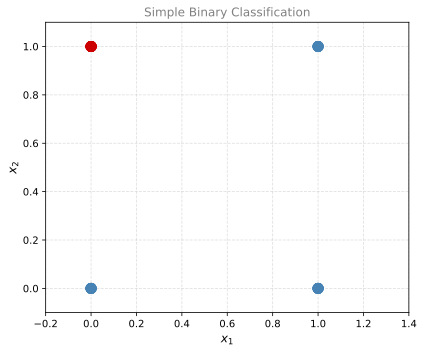
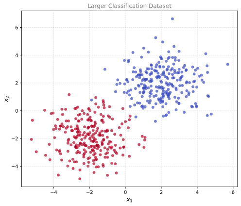
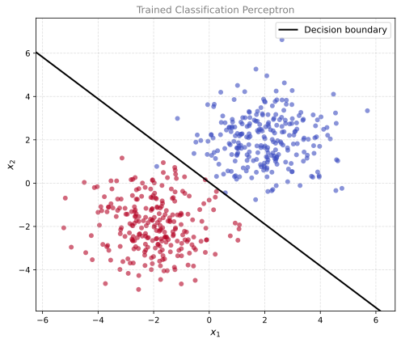

import numpy as np
import matplotlib.pyplot as plt
from matplotlib import colors
from sklearn.datasets import make_blobs
np.random.seed(3)Lab: Classification with a Perceptron
calculus
In this lab, we will implement a single-perceptron neural network for binary classification. This is the companion lab to the Classification with a Perceptron theory page. We will reuse the same building blocks from the Regression with a Perceptron lab, but with two key changes: the sigmoid activation function and the log loss cost function.
Part 1. A Simple Classification Problem
We start with a tiny dataset of 30 training examples. Each example has two binary features (\(x_1, x_2 \in \{0, 1\}\)). The classification rule is: the label is 1 (red class) if \(x_1 = 0\) AND \(x_2 = 1\). Otherwise, the label is 0 (blue class).
m = 30
X = np.random.randint(0, 2, (2, m))
Y = np.logical_and(X[0] == 0, X[1] == 1).astype(int).reshape((1, m))
print("Shape of X:", X.shape)
print("Shape of Y:", Y.shape)
print(f"We have m = {X.shape[1]} training examples.")
print(f"Number of class 1 (red): {Y.sum()}")
print(f"Number of class 0 (blue): {m - Y.sum()}")Shape of X: (2, 30)
Shape of Y: (1, 30)
We have m = 30 training examples.
Number of class 1 (red): 10
Number of class 0 (blue): 20Let us visualize the data. The blue points belong to class 0 and the red points belong to class 1.
%config InlineBackend.figure_formats = ['svg']
fig, ax = plt.subplots(figsize=(6, 5))
# Plot each class
for i in range(m):
color = '#CC0000' if Y[0, i] == 1 else '#4682B4'
ax.scatter(X[0, i], X[1, i], color=color, s=100, zorder=5)
ax.set_xlabel(r'$x_1$', fontsize=12)
ax.set_ylabel(r'$x_2$', fontsize=12)
ax.set_title('Simple Binary Classification', fontsize=12, color='gray')
ax.set_xlim([-0.2, 1.4])
ax.set_ylim([-0.1, 1.1])
ax.grid(linestyle='--', alpha=0.4)
plt.tight_layout()
plt.show()
We can see that only the point at \((0, 1)\) is red. A good decision boundary would be a line that separates this point from the others. We will train a perceptron with sigmoid activation to find that line automatically.
Part 2. Defining the Sigmoid Activation
The sigmoid function maps any real number to the interval \((0, 1)\).
\[\sigma(z) = \frac{1}{1 + e^{-z}}\]
def sigmoid(z):
return 1 / (1 + np.exp(-z))
print("sigmoid(-2) =", sigmoid(-2))
print("sigmoid(0) =", sigmoid(0))
print("sigmoid(3.5) =", sigmoid(3.5))sigmoid(-2) = 0.11920292202211755
sigmoid(0) = 0.5
sigmoid(3.5) = 0.9706877692486436It works element-wise on NumPy arrays, which makes it convenient for vectorized operations.
Part 3. Building the Neural Network
The structure is identical to the regression perceptron, with one difference in forward propagation: after computing the linear combination \(Z = WX + b\), we apply the sigmoid to get the output \(A = \sigma(Z)\).
Defining Network Structure
def layer_sizes(X, Y):
n_x = X.shape[0]
n_y = Y.shape[0]
return (n_x, n_y)
(n_x, n_y) = layer_sizes(X, Y)
print("Input layer size: n_x =", n_x)
print("Output layer size: n_y =", n_y)Input layer size: n_x = 2
Output layer size: n_y = 1Initializing Parameters
def initialize_parameters(n_x, n_y):
W = np.random.randn(n_y, n_x) * 0.01
b = np.zeros((n_y, 1))
return {"W": W, "b": b}
parameters = initialize_parameters(n_x, n_y)
print("W =", parameters["W"])
print("b =", parameters["b"])W = [[-0.00768836 -0.00230031]]
b = [[0.]]Forward Propagation (with Sigmoid)
This is the key difference from the regression lab. Instead of outputting \(Z\) directly, we pass it through the sigmoid.
\[Z = WX + b\] \[A = \sigma(Z)\]
def forward_propagation(X, parameters):
W = parameters["W"]
b = parameters["b"]
Z = np.matmul(W, X) + b
A = sigmoid(Z)
return A
A = forward_propagation(X, parameters)
print("First 5 outputs:", A[0, :5])First 5 outputs: [0.5 0.49942492 0.49807792 0.49750285 0.49942492]Computing Cost (Log Loss)
For classification, we use the log loss (binary cross-entropy) instead of squared error.
\[\mathcal{L}(W, b) = -\frac{1}{m}\sum_{i=1}^{m}\left[y^{(i)}\ln(a^{(i)}) + (1 - y^{(i)})\ln(1 - a^{(i)})\right]\]
def compute_cost(A, Y):
m = Y.shape[1]
logprobs = -np.multiply(np.log(A), Y) - np.multiply(np.log(1 - A), 1 - Y)
cost = (1 / m) * np.sum(logprobs)
return cost
print("Initial cost:", compute_cost(A, Y))Initial cost: 0.6916391611507908Backward Propagation
As derived in the theory page, the gradients simplify beautifully thanks to the sigmoid and log loss working together:
\[\frac{\partial \mathcal{L}}{\partial W} = \frac{1}{m}(A - Y)X^T\]
\[\frac{\partial \mathcal{L}}{\partial b} = \frac{1}{m}\sum_{i=1}^{m}(a^{(i)} - y^{(i)})\]
def backward_propagation(A, X, Y):
m = X.shape[1]
dZ = A - Y
dW = (1 / m) * np.dot(dZ, X.T)
db = (1 / m) * np.sum(dZ, axis=1, keepdims=True)
return {"dW": dW, "db": db}
grads = backward_propagation(A, X, Y)
print("dW =", grads["dW"])
print("db =", grads["db"])dW = [[ 0.21571875 -0.06735779]]
db = [[0.16552706]]Updating Parameters
def update_parameters(parameters, grads, learning_rate=1.2):
W = parameters["W"]
b = parameters["b"]
dW = grads["dW"]
db = grads["db"]
W = W - learning_rate * dW
b = b - learning_rate * db
return {"W": W, "b": b}Putting It All Together
def nn_model(X, Y, num_iterations=50, learning_rate=1.2, print_cost=False):
n_x, n_y = layer_sizes(X, Y)
parameters = initialize_parameters(n_x, n_y)
for i in range(num_iterations):
A = forward_propagation(X, parameters)
cost = compute_cost(A, Y)
grads = backward_propagation(A, X, Y)
parameters = update_parameters(parameters, grads, learning_rate)
if print_cost:
print(f"Cost after iteration {i}: {cost:.6f}")
return parametersTraining
parameters = nn_model(X, Y, num_iterations=50, learning_rate=1.2, print_cost=True)
print("W =", parameters["W"])
print("b =", parameters["b"])Cost after iteration 0: 0.693480
Cost after iteration 1: 0.608586
Cost after iteration 2: 0.554475
Cost after iteration 3: 0.513124
Cost after iteration 4: 0.478828
Cost after iteration 5: 0.449395
Cost after iteration 6: 0.423719
Cost after iteration 7: 0.401089
Cost after iteration 8: 0.380986
Cost after iteration 9: 0.363002
Cost after iteration 10: 0.346813
Cost after iteration 11: 0.332152
Cost after iteration 12: 0.318805
Cost after iteration 13: 0.306594
Cost after iteration 14: 0.295369
Cost after iteration 15: 0.285010
Cost after iteration 16: 0.275412
Cost after iteration 17: 0.266489
Cost after iteration 18: 0.258167
Cost after iteration 19: 0.250382
Cost after iteration 20: 0.243080
Cost after iteration 21: 0.236215
Cost after iteration 22: 0.229745
Cost after iteration 23: 0.223634
Cost after iteration 24: 0.217853
Cost after iteration 25: 0.212372
Cost after iteration 26: 0.207168
Cost after iteration 27: 0.202219
Cost after iteration 28: 0.197505
Cost after iteration 29: 0.193009
Cost after iteration 30: 0.188716
Cost after iteration 31: 0.184611
Cost after iteration 32: 0.180682
Cost after iteration 33: 0.176917
Cost after iteration 34: 0.173306
Cost after iteration 35: 0.169839
Cost after iteration 36: 0.166507
Cost after iteration 37: 0.163303
Cost after iteration 38: 0.160218
Cost after iteration 39: 0.157246
Cost after iteration 40: 0.154382
Cost after iteration 41: 0.151618
Cost after iteration 42: 0.148950
Cost after iteration 43: 0.146373
Cost after iteration 44: 0.143881
Cost after iteration 45: 0.141471
Cost after iteration 46: 0.139139
Cost after iteration 47: 0.136881
Cost after iteration 48: 0.134694
Cost after iteration 49: 0.132574
W = [[-3.57177421 3.24255633]]
b = [[-1.58411051]]The cost decreases steadily, which means the model is learning. After training, we can make predictions by thresholding the sigmoid output at 0.5.
Making Predictions
def predict(X, parameters):
A = forward_propagation(X, parameters)
predictions = (A > 0.5).astype(int)
return predictions
X_pred = np.array([[1, 1, 0, 0],
[0, 1, 0, 1]])
Y_pred = predict(X_pred, parameters)
print(f"Inputs (columns):\n{X_pred}")
print(f"Predictions:\n{Y_pred}")Inputs (columns):
[[1 1 0 0]
[0 1 0 1]]
Predictions:
[[0 0 0 1]]The model correctly identifies that only the input \((0, 1)\) belongs to class 1.
Part 4. Performance on a Larger Dataset
Now let us test our model on a more realistic dataset with many more points, generated using make_blobs.
m_larger = 500
X_larger, Y_larger_flat = make_blobs(n_samples=m_larger, centers=[[2, 2], [-2, -2]],
cluster_std=1.2, random_state=42)
X_larger = X_larger.T
Y_larger = Y_larger_flat.reshape((1, m_larger))
print("Shape of X_larger:", X_larger.shape)
print("Shape of Y_larger:", Y_larger.shape)Shape of X_larger: (2, 500)
Shape of Y_larger: (1, 500)fig, ax = plt.subplots(figsize=(7, 6))
scatter = ax.scatter(X_larger[0], X_larger[1], c=Y_larger_flat,
cmap='coolwarm', alpha=0.7, edgecolors='none')
ax.set_xlabel(r'$x_1$', fontsize=12)
ax.set_ylabel(r'$x_2$', fontsize=12)
ax.set_title('Larger Classification Dataset', fontsize=12, color='gray')
ax.grid(linestyle='--', alpha=0.4)
plt.tight_layout()
plt.show()
Training on the Larger Dataset
parameters_larger = nn_model(X_larger, Y_larger, num_iterations=100,
learning_rate=0.5, print_cost=True)
print("W =", parameters_larger["W"])
print("b =", parameters_larger["b"])Cost after iteration 0: 0.674745
Cost after iteration 1: 0.167624
Cost after iteration 2: 0.127560
Cost after iteration 3: 0.106616
Cost after iteration 4: 0.093297
Cost after iteration 5: 0.083923
Cost after iteration 6: 0.076891
Cost after iteration 7: 0.071383
Cost after iteration 8: 0.066926
Cost after iteration 9: 0.063232
Cost after iteration 10: 0.060109
Cost after iteration 11: 0.057428
Cost after iteration 12: 0.055096
Cost after iteration 13: 0.053044
Cost after iteration 14: 0.051222
Cost after iteration 15: 0.049592
Cost after iteration 16: 0.048122
Cost after iteration 17: 0.046789
Cost after iteration 18: 0.045574
Cost after iteration 19: 0.044459
Cost after iteration 20: 0.043434
Cost after iteration 21: 0.042485
Cost after iteration 22: 0.041606
Cost after iteration 23: 0.040787
Cost after iteration 24: 0.040023
Cost after iteration 25: 0.039307
Cost after iteration 26: 0.038635
Cost after iteration 27: 0.038003
Cost after iteration 28: 0.037407
Cost after iteration 29: 0.036844
Cost after iteration 30: 0.036311
Cost after iteration 31: 0.035806
Cost after iteration 32: 0.035325
Cost after iteration 33: 0.034869
Cost after iteration 34: 0.034433
Cost after iteration 35: 0.034018
Cost after iteration 36: 0.033621
Cost after iteration 37: 0.033241
Cost after iteration 38: 0.032877
Cost after iteration 39: 0.032529
Cost after iteration 40: 0.032194
Cost after iteration 41: 0.031872
Cost after iteration 42: 0.031563
Cost after iteration 43: 0.031265
Cost after iteration 44: 0.030978
Cost after iteration 45: 0.030702
Cost after iteration 46: 0.030435
Cost after iteration 47: 0.030177
Cost after iteration 48: 0.029928
Cost after iteration 49: 0.029686
Cost after iteration 50: 0.029453
Cost after iteration 51: 0.029227
Cost after iteration 52: 0.029008
Cost after iteration 53: 0.028796
Cost after iteration 54: 0.028590
Cost after iteration 55: 0.028390
Cost after iteration 56: 0.028196
Cost after iteration 57: 0.028007
Cost after iteration 58: 0.027824
Cost after iteration 59: 0.027646
Cost after iteration 60: 0.027472
Cost after iteration 61: 0.027303
Cost after iteration 62: 0.027138
Cost after iteration 63: 0.026978
Cost after iteration 64: 0.026822
Cost after iteration 65: 0.026669
Cost after iteration 66: 0.026520
Cost after iteration 67: 0.026375
Cost after iteration 68: 0.026234
Cost after iteration 69: 0.026095
Cost after iteration 70: 0.025960
Cost after iteration 71: 0.025828
Cost after iteration 72: 0.025699
Cost after iteration 73: 0.025572
Cost after iteration 74: 0.025449
Cost after iteration 75: 0.025328
Cost after iteration 76: 0.025210
Cost after iteration 77: 0.025094
Cost after iteration 78: 0.024980
Cost after iteration 79: 0.024869
Cost after iteration 80: 0.024760
Cost after iteration 81: 0.024654
Cost after iteration 82: 0.024549
Cost after iteration 83: 0.024447
Cost after iteration 84: 0.024346
Cost after iteration 85: 0.024248
Cost after iteration 86: 0.024151
Cost after iteration 87: 0.024056
Cost after iteration 88: 0.023963
Cost after iteration 89: 0.023871
Cost after iteration 90: 0.023781
Cost after iteration 91: 0.023693
Cost after iteration 92: 0.023606
Cost after iteration 93: 0.023521
Cost after iteration 94: 0.023438
Cost after iteration 95: 0.023355
Cost after iteration 96: 0.023274
Cost after iteration 97: 0.023195
Cost after iteration 98: 0.023117
Cost after iteration 99: 0.023040
W = [[-1.73676546 -1.80172471]]
b = [[0.06164112]]Visualizing the Decision Boundary
fig, ax = plt.subplots(figsize=(7, 6))
# Plot data points
scatter = ax.scatter(X_larger[0], X_larger[1], c=Y_larger_flat,
cmap='coolwarm', alpha=0.6, edgecolors='none')
# Plot decision boundary: W[0]*x1 + W[1]*x2 + b = 0
W = parameters_larger["W"]
b_val = parameters_larger["b"][0, 0]
x1_range = np.linspace(X_larger[0].min() - 1, X_larger[0].max() + 1, 100)
# W[0,0]*x1 + W[0,1]*x2 + b = 0 => x2 = -(W[0,0]*x1 + b) / W[0,1]
x2_boundary = -(W[0, 0] * x1_range + b_val) / W[0, 1]
ax.plot(x1_range, x2_boundary, color='black', linewidth=2, label='Decision boundary')
ax.set_xlabel(r'$x_1$', fontsize=12)
ax.set_ylabel(r'$x_2$', fontsize=12)
ax.set_title('Trained Classification Perceptron', fontsize=12, color='gray')
ax.set_xlim([X_larger[0].min() - 1, X_larger[0].max() + 1])
ax.set_ylim([X_larger[1].min() - 1, X_larger[1].max() + 1])
ax.legend(fontsize=11)
ax.grid(linestyle='--', alpha=0.4)
plt.tight_layout()
plt.show()
Accuracy
predictions = predict(X_larger, parameters_larger)
accuracy = np.mean(predictions == Y_larger) * 100
print(f"Accuracy on training set: {accuracy:.1f}%")Accuracy on training set: 99.8%With a single perceptron and gradient descent using log loss, we can solve linearly separable classification problems. The same architecture and code from the regression lab carries over with minimal changes: replace the identity activation with sigmoid, and replace squared error with log loss. The clean gradient formulas \((\hat{y} - y) \cdot x_i\) make implementation straightforward.